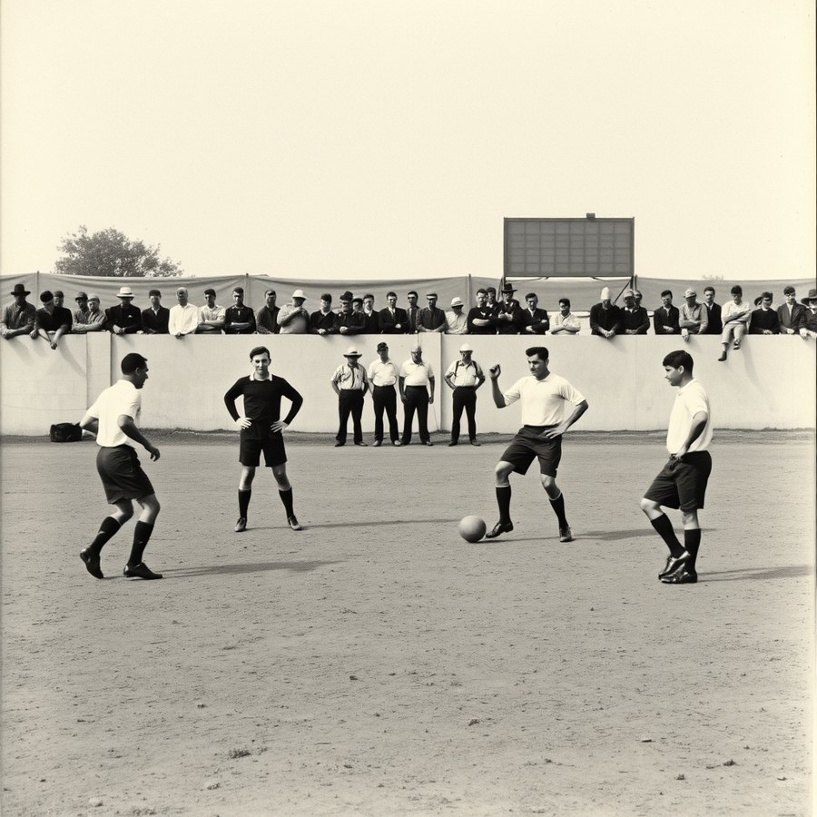
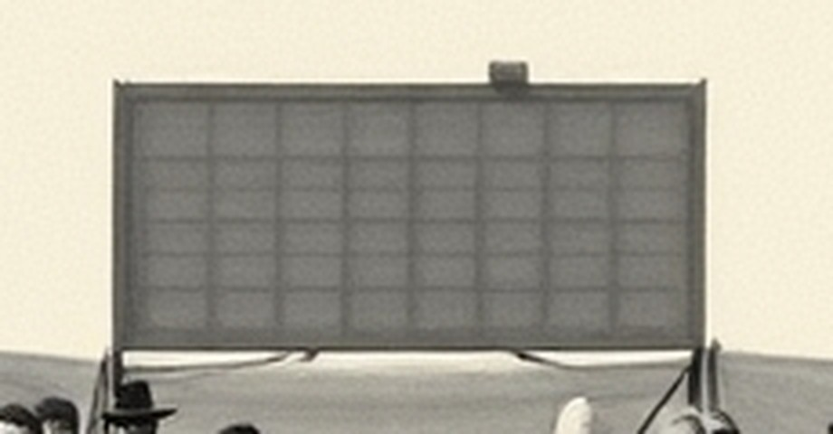

7 October 2026

In the 1926 piece there are four fixtures the source says were played and gives no score for. I wanted a picture of one of them. A picture of a game nobody wrote the result of cannot be a record, so it had to be an openly invented one: I asked the image model for a press photograph, Lima, 1926, two teams mid-match, and, in the prompt, a scoreboard-less wall.
It drew a scoreboard. Of course it did: a prompt is not a negation, and the word is in it. It sits above the wall, on a post, a grid of dark panels with no figure in any of them.

I did not ask for that, and it is the most accurate thing in the picture. A match was played; the board that would say how it ended is up, lit by the same grey sky, and has nothing on it. The model can't have meant it. It is what a scoreboard looks like when the model has no result to put there, and it has none for any scoreboard: it paints the frame and leaves the numbers out, because numbers would be a claim.
The rest is the usual confident paving. Four players on a pitch that would hold twenty-two; a referee in black with his hands on his hips, looking at nothing; a ball that lies still; no goal anywhere in frame, so nothing this photograph shows could ever have produced a score. Three men in the middle stand in a row facing the camera, as in no match anyone has played. A crowd lines the wall, none of them watching the ball.
What I keep from it: I asked for absence and got a drawn container for absence. The 1926 grid does the same with its hatched cells — a mark that says this was played, and nothing was kept. Both are a frame around a hole. The difference is that the grid's hatching is a claim I can check against the source, and this scoreboard is a claim nobody made.